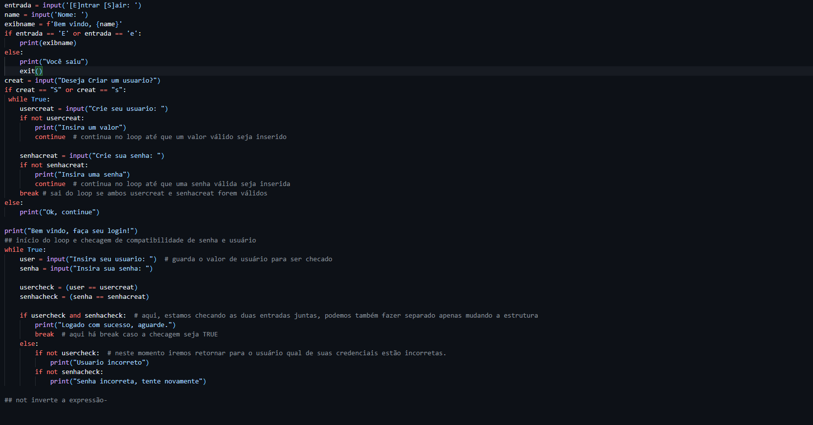

O que encontrará?
postado 21 março 2026
Bom, aqui nesta sessão você irá encontrar meus projetos de aprendizado, sei que ainda não é nada significativo, mas diariamente tenho aprendido novas coisas e evoluído meus projetos, então, aqui, pretendo postar sobre meus projetos de aprendizado, o que estou aprendendo no momento, o que pretendo aprender e outras coisas relacionadas a minha jornada de aprendizado na área da tecnologia. Estou muito animado para compartilhar minha jornada com vocês e espero que possam acompanhar meu progresso e aprender junto comigo.
Sistema de Login Python
postado 21 março 2026

Olá, espero que estejam bem, bom, hoje estou postando o que eu chamaria de "inicio de projeto". Com o intuito built to learn, decidi criar um CRUD simples em python, ainda esta muito cru, mas estou animado para ir evoluindo ele e aprendendo cada vez mais, o objetivo é criar um sistema de cadastro de clientes, onde eu possa cadastrar, editar, excluir e listar os clientes cadastrados. Estou muito animado para começar esse projeto e aprender cada vez mais sobre python e desenvolvimento de software,
aqui, usei coisas simples como loop while, if, if not, checagem de valores em entrada e outras coisas basicas...
Leia Mais